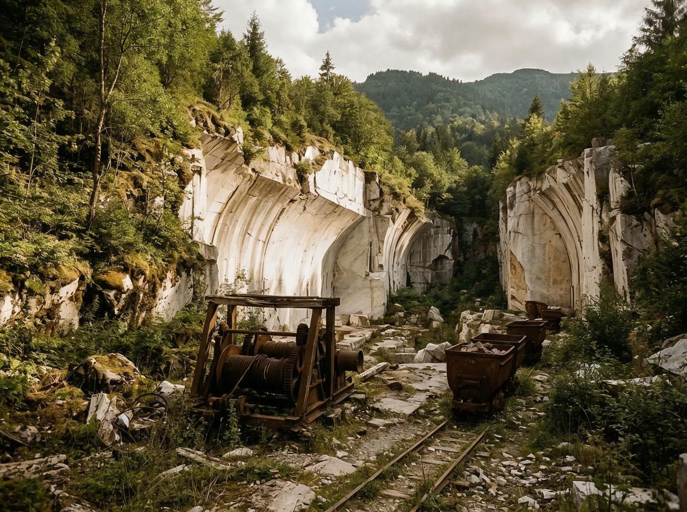
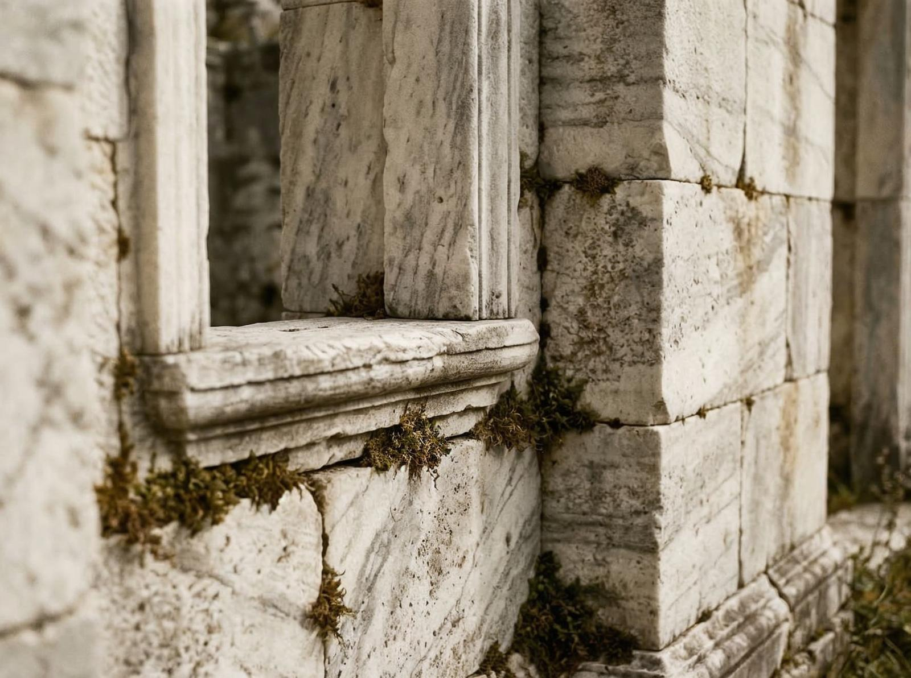

Coordonatele îmi sunt notate în agendă: 45° 48′ 15″ N 23° 02′ 45″ E. Alun. Un nume simplu, dar locul e orice altceva decât simplu. Situat în Ținutul Pădurenilor, în Munții Poiana Ruscă, la comuna Bunila, județul Hunedoara. Acolo unde drumurile devin poteci, potecile devin drumuri, și marmura e omniprezentă.
Puțini știu că Alun e supranumit "satul de marmură". Nu e doar un nume poetic. E literal. Drumurile sunt pavate cu marmură. Casele sunt construite din marmură. Biserica e din marmură. Totul e alb, strălucitor, înconjurat de păduri verzi.
Interesant e că Alun nu e doar frumos. E bogat. Sau a fost. Cândva avea peste 100 de locuitori și era cunoscut ca unul dintre cele mai bogate sate din Ținutul Pădurenilor. Avea o carieră de marmură de unde s-a extras piatră pentru Casa Poporului. Da, acolo. Din marmura de la Alun a ieșit piatra pentru clădirea din București.

Azi, Alun are mai puțin de 5 locuitori permanenți. E un sat fantomă, dar fantomă frumoasă. Drumul de marmură, circa 10 kilometri, marcat cu cruce albastră, face legătura între sat și Valea Pestișului. E un drum pe care vrei să-l mergi, deși nu știi unde duce.
Și iată ce e fascinant: marmura nu e doar decor. E istorie. E cultura. E identitate. Oamenii din Alun au trăit din marmură, au trăit cu marmură, au trăit în marmură. Acum, când marmura e tot ce a rămas, se pare că a devenit și moștenire.
Problema e că Alun e probabil cel mai scump sat abandonat din România. Marmura are valoare. Dar cine să o folosească? Satul e pustiu. Casa Poporului stă în București. Marmura rămâne acolo, în Munții Poiana Ruscă, uitată.

Și totuși există. E acolo, albă, strălucitoare, așteptând să fie redescoperită. Oamenii vin, o admiră, pleacă. Se întorc. O admiră din nou. E un ciclu care continuă, chiar dacă oamenii nu mai stau acolo.
Oamenii au plecat. Satul a rămas. Marmura a rămas. Și istoria a rămas, scrisă în fiecare piatră.
Există o Românie pe care n-o vezi în reclame turistice — locuri uitate, sate părăsite, bogății nevalorificate. Alun face parte din ea.
Probabil că nu putem reveni la același nivel. Dar putem învăța. Putem învăța că bogăția nu e doar în bani. E în locuri. E în tradiții. E în identitate. Și că, uneori, cele mai importante lucruri sunt cele pe care le-am uitat.
Alun e o amintire. O amintire a ceea ce am fost, ceea ce am creat, ceea ce am trăit. Și o amintire a ceea ce putem fi, dacă învățăm din trecut.